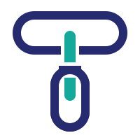
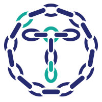
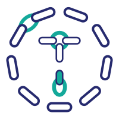
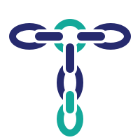
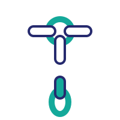

A. Chain seal
A ring of linked segments, one per second of video; the newest in teal. A broken ring can mean "altered".
B. Human and AI
A person and an AI side by side under one seal, on one shared line: both accountable.
C. Lens check
A camera aperture around a check mark. Strongest as the capture app icon.
D. T-link
The T of Testimonia as two interlocking chain links.
E. Chain T
The T as a real chain: the bar is one link, the stem a chain hanging from it.


F. Key T
An upside-down skeleton key: its bit is the bar of the T, its ring a chain link.

G. Sealed key
The key inside the chain seal from A.
H. Chain ring
A with its outer ring made of real chain links, alternating face-on and edge-on.

 Testimonia
TestimoniaI. Chain ring, chain T
The chain ring with a T built from chain links inside.


J. Chain T
The T built from oval chain links around a junction ring.

